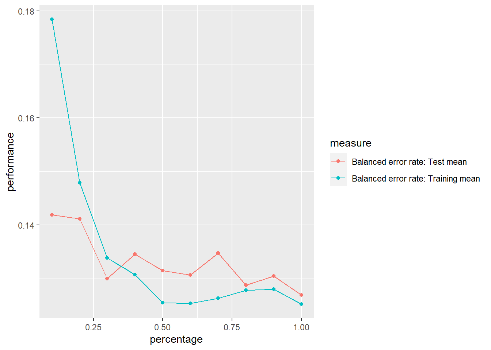
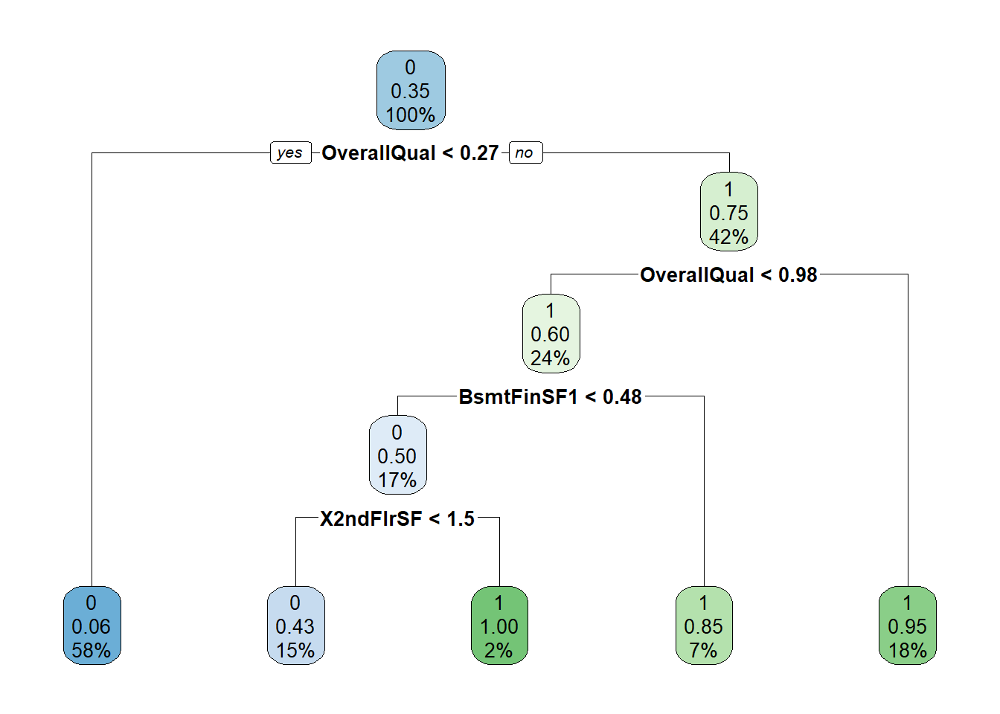

set.seed(1234)
datos <- read.csv("train.csv")MD_HDT6
División de variables numéricas y obtención de data de prueba y entrenamiento
División de variables
numeric_variables <- c("SalePrice", "LotFrontage", "LotArea", "OverallQual", "OverallCond", "MasVnrArea", "BsmtFinSF1", "BsmtFinSF2", "BsmtUnfSF", "TotalBsmtSF", "X1stFlrSF", "X2ndFlrSF", "LowQualFinSF", "GrLivArea", "BsmtFullBath", "BsmtHalfBath", "FullBath", "HalfBath", "BedroomAbvGr", "KitchenAbvGr", "TotRmsAbvGrd", "Fireplaces", "GarageCars", "GarageArea", "WoodDeckSF", "OpenPorchSF", "EnclosedPorch", "X3SsnPorch", "ScreenPorch", "PoolArea", "MiscVal")
numericas <- datos[, numeric_variables]
cualitativas <- datos[, !(names(datos) %in% numeric_variables)]
cualitativas <- cualitativas[, !(names(cualitativas) %in% c("Id"))]
cualitativas <- cualitativas %>%
mutate(MoSold = month.abb[MoSold])
datos <- datos %>% mutate_at(colnames(cualitativas), function(x) as.factor(x))
numericas <- datos[, numeric_variables]
datos <- datos[complete.cases(numericas), ]
numericas <- na.omit(numericas)
numericas_norm <- mutate_if(numericas, is.numeric, scale)
datos <- data.frame(numericas_norm, datos[, -match(numeric_variables, names(datos))])Analisis de NA’s
faltantes_por_col <- colSums(is.na(datos))
faltantes_por_col
0 0 0 0 0
0 0 0 0 0
0 0 0 0 0
0 0 0 0 0
0 0 0 0 0
0 0 0 0 0
Id MSSubClass MSZoning Street
0 0 0 0 0
Alley LotShape LandContour Utilities LotConfig
1110 0 0 0 0
LandSlope Neighborhood Condition1 Condition2 BldgType
0 0 0 0 0
HouseStyle YearBuilt YearRemodAdd RoofStyle RoofMatl
0 0 0 0 0
Exterior1st Exterior2nd MasVnrType ExterQual ExterCond
0 0 0 0 0
Foundation BsmtQual BsmtCond BsmtExposure BsmtFinType1
0 31 31 32 31
BsmtFinType2 Heating HeatingQC CentralAir Electrical
32 0 0 0 1
KitchenQual Functional FireplaceQu GarageType GarageYrBlt
0 0 596 74 74
GarageFinish GarageQual GarageCond PavedDrive PoolQC
74 74 74 0 1189
Fence MiscFeature MoSold YrSold SaleType
967 1156 0 0 0
SaleCondition
0 Como se puede observar en el conteo de datos faltantes, las columnas FireplaceQu, MiscFeature, Fence, Alley y PoolQC presentn varios datos faltantes. Es por esto que esas columnas no formaran parte de nuestro estudio
datos <- select(datos, -Id, -PoolQC, -Fence, -Alley, -MiscFeature, -FireplaceQu)
datos <- na.omit(datos)Eliminación de variables no significativas
datos <- select(datos, -GarageYrBlt, -SaleType, -SaleCondition, -MoSold, -YrSold, -YearBuilt, -Condition2, -MSSubClass, MSZoning, -LotShape)En el dataset existian variables que solo agregaban ruido al estudio debido a la insignificancia de sus valores. Por lo tanto estas columnas fueron removidas.
Creación de clasificación de la variable de precios
p33 <- quantile(datos$SalePrice, 0.33)
p66 <- quantile(datos$SalePrice, 0.66)
datosT <- datos
datosT <- datosT %>%
mutate(clasificacion = ifelse(datosT$SalePrice < p33, "Economicas",
ifelse(datosT$SalePrice < p66, "Intermedias",
"Caras"
)
))
datosT$clasificacion <- as.factor(datosT$clasificacion)1 Creación de variables dicotómicas
library(fastDummies)Warning: package 'fastDummies' was built under R version 4.2.3datos_con_dummy <- dummy_cols(datosT, select_columns = c("clasificacion"))
datos_con_dummy <- select(datos_con_dummy, -clasificacion, -clasificacion_Economicas, -clasificacion_Intermedias)
datos_con_dummy$clasificacion_Caras <- datos_con_dummy$clasificacion_Caras
datos_con_dummy<-datos_con_dummy %>% mutate_at(c("clasificacion_Caras"),as.factor)2 Use los mismos conjuntos de entrenamiento y prueba
porcentaje <- 0.7
set.seed(1234)
numeric_variables2 <- c("LotFrontage", "LotArea", "OverallQual", "OverallCond", "MasVnrArea", "BsmtFinSF1", "BsmtFinSF2", "BsmtUnfSF", "TotalBsmtSF", "X1stFlrSF", "X2ndFlrSF", "LowQualFinSF", "GrLivArea", "BsmtFullBath", "BsmtHalfBath", "FullBath", "HalfBath", "BedroomAbvGr", "KitchenAbvGr", "TotRmsAbvGrd", "Fireplaces", "GarageCars", "GarageArea", "WoodDeckSF", "OpenPorchSF", "EnclosedPorch", "X3SsnPorch", "ScreenPorch", "PoolArea", "MiscVal", "clasificacion_Caras")
datos_num <- select(datos_con_dummy, -SalePrice)
datos_num <- select(datos_con_dummy, -Utilities)
# datos_num <- datos_con_dummy[, numeric_variables2]
corte <- sample(nrow(datos_num), nrow(datos_num) * porcentaje)
train <- datos_num[corte, ]
test <- datos_num[-corte, ]3 Elabore un modelo de regresion Logistica
cv <- trainControl(method="cv", number=10)
modelo_todas_cv <- caret::train(clasificacion_Caras~., data=train,method="glm", family = binomial, trControl = cv)model_summary <- summary(modelo_todas_cv)
print(model_summary, signif.stars = TRUE, digits = 3)
Call:
NULL
Deviance Residuals:
Min 1Q Median 3Q Max
-4.42e-05 -2.00e-08 -2.00e-08 2.00e-08 4.62e-05
Coefficients: (20 not defined because of singularities)
Estimate Std. Error z value Pr(>|z|)
(Intercept) 3.50e+02 4.96e+06 0 1
SalePrice 1.04e+02 1.61e+05 0 1
LotFrontage 7.74e+00 6.41e+04 0 1
LotArea -2.51e+01 7.73e+04 0 1
OverallQual -1.14e+01 7.36e+04 0 1
OverallCond -7.03e+00 1.01e+05 0 1
MasVnrArea -4.30e+00 5.08e+04 0 1
BsmtFinSF1 6.23e+00 1.44e+05 0 1
BsmtFinSF2 -1.23e+00 8.83e+04 0 1
BsmtUnfSF 4.91e+00 1.47e+05 0 1
TotalBsmtSF NA NA NA NA
X1stFlrSF -7.37e+00 1.09e+05 0 1
X2ndFlrSF 3.92e+01 2.09e+05 0 1
LowQualFinSF 1.00e+01 9.01e+04 0 1
GrLivArea NA NA NA NA
BsmtFullBath -5.21e+00 3.97e+04 0 1
BsmtHalfBath -2.95e+00 6.04e+04 0 1
FullBath -1.13e+01 8.36e+04 0 1
HalfBath -6.17e-01 5.88e+04 0 1
BedroomAbvGr 3.27e+00 5.85e+04 0 1
KitchenAbvGr -1.36e+00 1.68e+05 0 1
TotRmsAbvGrd 7.43e+00 7.37e+04 0 1
Fireplaces -5.67e+00 4.98e+04 0 1
GarageCars -2.82e+00 1.03e+05 0 1
GarageArea 1.06e+01 9.41e+04 0 1
WoodDeckSF 1.02e+00 3.11e+04 0 1
OpenPorchSF -2.41e+00 3.89e+04 0 1
EnclosedPorch -1.40e+00 5.44e+04 0 1
X3SsnPorch -1.06e+00 5.92e+04 0 1
ScreenPorch -1.48e+00 4.13e+04 0 1
PoolArea -2.57e+00 1.03e+05 0 1
MiscVal -1.06e+00 1.00e+05 0 1
MSZoningFV -8.63e+01 7.73e+05 0 1
MSZoningRH -8.07e+01 7.69e+05 0 1
MSZoningRL -5.97e+01 7.10e+05 0 1
MSZoningRM -5.67e+01 7.21e+05 0 1
StreetPave -5.05e+00 2.05e+06 0 1
LandContourHLS -9.16e+00 4.46e+05 0 1
LandContourLow -1.50e+01 4.62e+05 0 1
LandContourLvl -9.03e+00 3.95e+05 0 1
LotConfigCulDSac 9.52e+00 2.57e+05 0 1
LotConfigFR2 -2.06e+01 1.96e+05 0 1
LotConfigFR3 2.00e+00 2.14e+06 0 1
LotConfigInside 3.97e-01 1.37e+05 0 1
LandSlopeMod -3.96e+01 3.04e+05 0 1
LandSlopeSev -3.31e+01 9.15e+05 0 1
NeighborhoodBlueste -3.08e+01 1.42e+06 0 1
NeighborhoodBrDale 5.77e+01 1.55e+06 0 1
NeighborhoodBrkSide 4.72e+01 3.94e+05 0 1
NeighborhoodClearCr 6.43e+01 1.62e+06 0 1
NeighborhoodCollgCr 3.69e+01 3.59e+05 0 1
NeighborhoodCrawfor 2.28e+01 4.41e+05 0 1
NeighborhoodEdwards 2.19e-01 3.95e+05 0 1
NeighborhoodGilbert -1.66e+01 3.93e+05 0 1
NeighborhoodIDOTRR 4.80e+01 6.28e+05 0 1
NeighborhoodMeadowV -3.18e+01 8.70e+05 0 1
NeighborhoodMitchel 6.16e+01 3.61e+05 0 1
NeighborhoodNAmes 4.26e+01 3.53e+05 0 1
NeighborhoodNoRidge -4.70e+01 4.31e+05 0 1
NeighborhoodNPkVill 4.94e+01 7.03e+05 0 1
NeighborhoodNridgHt 4.26e+01 4.12e+05 0 1
NeighborhoodNWAmes 4.90e+01 4.06e+05 0 1
NeighborhoodOldTown 2.58e+01 6.47e+05 0 1
NeighborhoodSawyer 6.04e+01 5.35e+05 0 1
NeighborhoodSawyerW 3.17e+01 3.97e+05 0 1
NeighborhoodSomerst 4.27e+01 4.21e+05 0 1
NeighborhoodStoneBr 3.34e+01 3.36e+05 0 1
NeighborhoodSWISU 3.72e+01 6.87e+05 0 1
NeighborhoodTimber 3.25e+01 3.43e+05 0 1
NeighborhoodVeenker 1.90e+00 5.69e+05 0 1
Condition1Feedr -1.82e+01 5.49e+05 0 1
Condition1Norm 4.44e+00 3.63e+05 0 1
Condition1PosA -5.99e+01 1.01e+06 0 1
Condition1PosN 1.23e+01 3.37e+05 0 1
Condition1RRAe 3.51e+01 5.94e+05 0 1
Condition1RRAn -2.63e+01 5.99e+05 0 1
Condition1RRNe -2.95e+01 5.99e+05 0 1
Condition1RRNn -8.14e+01 1.06e+06 0 1
BldgType2fmCon -3.61e+01 1.41e+06 0 1
BldgTypeDuplex -6.63e+01 6.95e+05 0 1
BldgTypeTwnhs 5.71e+00 4.33e+05 0 1
BldgTypeTwnhsE 2.75e+01 2.04e+05 0 1
HouseStyle1.5Unf 9.52e+01 4.45e+05 0 1
HouseStyle1Story 7.21e+01 3.03e+05 0 1
HouseStyle2.5Fin -9.80e+01 1.12e+06 0 1
HouseStyle2.5Unf -4.45e+01 1.35e+06 0 1
HouseStyle2Story -1.96e+00 2.32e+05 0 1
HouseStyleSFoyer 5.38e+01 4.34e+05 0 1
HouseStyleSLvl 4.01e+01 4.28e+05 0 1
YearRemodAdd1951 2.98e+00 7.20e+05 0 1
YearRemodAdd1952 3.23e+01 1.06e+06 0 1
YearRemodAdd1953 4.67e+01 5.46e+05 0 1
YearRemodAdd1954 3.57e+01 8.59e+05 0 1
YearRemodAdd1955 7.27e+01 8.06e+05 0 1
YearRemodAdd1956 7.31e+00 4.58e+05 0 1
YearRemodAdd1957 3.08e+01 4.79e+05 0 1
YearRemodAdd1958 -1.72e+00 4.31e+05 0 1
YearRemodAdd1959 9.29e-01 6.26e+05 0 1
YearRemodAdd1960 1.77e+01 4.32e+05 0 1
YearRemodAdd1961 8.91e+00 4.44e+05 0 1
YearRemodAdd1962 -3.45e+01 4.49e+05 0 1
YearRemodAdd1963 2.23e+01 5.84e+05 0 1
YearRemodAdd1964 -3.26e+00 4.78e+05 0 1
YearRemodAdd1965 3.00e+01 1.19e+06 0 1
YearRemodAdd1966 -2.38e+01 4.13e+05 0 1
YearRemodAdd1967 4.69e+01 5.78e+05 0 1
YearRemodAdd1968 2.10e-01 5.91e+05 0 1
YearRemodAdd1969 -2.45e+01 7.22e+05 0 1
YearRemodAdd1970 7.36e+00 1.10e+06 0 1
YearRemodAdd1971 7.17e+00 1.19e+06 0 1
YearRemodAdd1972 2.81e+01 4.14e+05 0 1
YearRemodAdd1973 -4.41e+01 4.91e+05 0 1
YearRemodAdd1974 -1.33e+01 6.19e+05 0 1
YearRemodAdd1975 9.55e+00 6.65e+05 0 1
YearRemodAdd1976 7.80e+00 5.32e+05 0 1
YearRemodAdd1977 -1.06e+01 5.14e+05 0 1
YearRemodAdd1978 6.62e+00 8.43e+05 0 1
YearRemodAdd1979 -1.95e+01 6.11e+05 0 1
YearRemodAdd1980 4.20e+01 1.05e+06 0 1
YearRemodAdd1981 4.64e+00 5.45e+05 0 1
YearRemodAdd1982 -2.97e+01 9.73e+05 0 1
YearRemodAdd1983 8.10e+01 7.34e+05 0 1
YearRemodAdd1984 1.10e+00 7.51e+05 0 1
YearRemodAdd1985 -3.42e+00 5.38e+05 0 1
YearRemodAdd1986 -7.03e+00 9.84e+05 0 1
YearRemodAdd1987 -1.41e-01 5.73e+05 0 1
YearRemodAdd1988 -2.38e+01 4.73e+05 0 1
YearRemodAdd1989 -1.05e+01 5.28e+05 0 1
YearRemodAdd1990 4.15e+01 4.87e+05 0 1
YearRemodAdd1991 4.73e+01 5.32e+05 0 1
YearRemodAdd1992 -7.57e+00 5.43e+05 0 1
YearRemodAdd1993 -6.89e+00 5.34e+05 0 1
YearRemodAdd1994 4.20e+01 3.79e+05 0 1
YearRemodAdd1995 -1.64e+01 4.36e+05 0 1
YearRemodAdd1996 7.36e+00 4.94e+05 0 1
YearRemodAdd1997 6.36e+01 1.83e+06 0 1
YearRemodAdd1998 3.62e+01 4.73e+05 0 1
YearRemodAdd1999 -2.95e+01 4.23e+05 0 1
YearRemodAdd2000 1.27e+01 3.51e+05 0 1
YearRemodAdd2001 -3.40e+00 4.26e+05 0 1
YearRemodAdd2002 1.73e+01 4.11e+05 0 1
YearRemodAdd2003 -5.60e+00 4.19e+05 0 1
YearRemodAdd2004 -1.21e+01 4.20e+05 0 1
YearRemodAdd2005 1.44e+01 4.59e+05 0 1
YearRemodAdd2006 1.25e+01 4.11e+05 0 1
YearRemodAdd2007 1.73e+01 3.97e+05 0 1
YearRemodAdd2008 3.16e+01 4.17e+05 0 1
YearRemodAdd2009 2.10e+01 4.15e+05 0 1
YearRemodAdd2010 -2.83e+01 5.44e+05 0 1
RoofStyleGable -1.26e+00 1.48e+06 0 1
RoofStyleGambrel 3.35e+00 1.54e+06 0 1
RoofStyleHip -1.46e+01 1.47e+06 0 1
RoofStyleMansard 1.10e+01 2.17e+06 0 1
RoofStyleShed NA NA NA NA
RoofMatlCompShg -2.00e+02 2.19e+06 0 1
RoofMatlMembran -2.64e+02 4.40e+06 0 1
RoofMatlMetal NA NA NA NA
RoofMatlRoll -1.27e+02 2.38e+06 0 1
`RoofMatlTar&Grv` -1.79e+02 2.45e+06 0 1
RoofMatlWdShake NA NA NA NA
RoofMatlWdShngl -2.31e+02 1.96e+06 0 1
Exterior1stAsphShn NA NA NA NA
Exterior1stBrkComm 2.55e+02 4.76e+07 0 1
Exterior1stBrkFace 3.67e+01 4.75e+07 0 1
Exterior1stCBlock 6.79e+01 2.57e+06 0 1
Exterior1stCemntBd -2.01e+02 4.75e+07 0 1
Exterior1stHdBoard 5.36e+01 4.75e+07 0 1
Exterior1stImStucc 1.50e+02 4.75e+07 0 1
Exterior1stMetalSd 9.00e+00 4.75e+07 0 1
Exterior1stPlywood 6.74e+01 4.75e+07 0 1
Exterior1stStone NA NA NA NA
Exterior1stStucco 2.92e+01 4.75e+07 0 1
Exterior1stVinylSd 9.37e+01 4.75e+07 0 1
`Exterior1stWd Sdng` 5.48e+01 4.75e+07 0 1
Exterior1stWdShing 1.04e+02 4.75e+07 0 1
Exterior2ndAsphShn -1.27e+02 4.75e+07 0 1
`Exterior2ndBrk Cmn` -1.19e+02 4.75e+07 0 1
Exterior2ndBrkFace -6.09e+01 4.75e+07 0 1
Exterior2ndCBlock NA NA NA NA
Exterior2ndCmentBd 1.62e+02 4.75e+07 0 1
Exterior2ndHdBoard -7.93e+01 4.75e+07 0 1
Exterior2ndImStucc -9.45e+01 4.75e+07 0 1
Exterior2ndMetalSd -1.65e+01 4.75e+07 0 1
Exterior2ndOther NA NA NA NA
Exterior2ndPlywood -8.05e+01 4.75e+07 0 1
Exterior2ndStone NA NA NA NA
Exterior2ndStucco -3.86e+01 4.75e+07 0 1
Exterior2ndVinylSd -1.23e+02 4.75e+07 0 1
`Exterior2ndWd Sdng` -7.59e+01 4.75e+07 0 1
`Exterior2ndWd Shng` -1.57e+02 4.75e+07 0 1
MasVnrTypeBrkFace 4.65e+01 1.01e+06 0 1
MasVnrTypeNone 3.66e+01 1.05e+06 0 1
MasVnrTypeStone 4.03e+01 1.04e+06 0 1
ExterQualFa 2.20e+01 2.13e+06 0 1
ExterQualGd 3.90e+01 3.89e+05 0 1
ExterQualTA 3.19e+01 4.09e+05 0 1
ExterCondFa -5.20e+01 2.35e+06 0 1
ExterCondGd -3.16e+01 1.59e+06 0 1
ExterCondPo NA NA NA NA
ExterCondTA -2.10e+01 1.58e+06 0 1
FoundationCBlock -2.18e+01 3.76e+05 0 1
FoundationPConc -2.16e+01 3.75e+05 0 1
FoundationSlab NA NA NA NA
FoundationStone -9.48e+01 4.75e+07 0 1
FoundationWood 3.76e+01 1.08e+06 0 1
BsmtQualFa 8.99e+01 5.95e+05 0 1
BsmtQualGd 1.75e+01 2.16e+05 0 1
BsmtQualTA 1.16e+01 2.90e+05 0 1
BsmtCondGd 5.54e+01 4.36e+05 0 1
BsmtCondPo 1.43e+02 3.03e+06 0 1
BsmtCondTA 2.64e+01 4.46e+05 0 1
BsmtExposureGd 3.03e+01 8.12e+04 0 1
BsmtExposureMn -7.33e+00 7.04e+04 0 1
BsmtExposureNo -1.38e+01 6.46e+04 0 1
BsmtFinType1BLQ -1.17e+01 2.51e+05 0 1
BsmtFinType1GLQ -1.29e+01 1.27e+05 0 1
BsmtFinType1LwQ -2.88e+01 3.42e+05 0 1
BsmtFinType1Rec -5.09e+00 1.48e+05 0 1
BsmtFinType1Unf -1.92e+01 1.53e+05 0 1
BsmtFinType2BLQ -1.45e+01 3.59e+05 0 1
BsmtFinType2GLQ 6.63e+01 8.11e+05 0 1
BsmtFinType2LwQ -8.57e+00 3.20e+05 0 1
BsmtFinType2Rec 1.25e+01 3.50e+05 0 1
BsmtFinType2Unf -6.04e+00 3.78e+05 0 1
HeatingGasA -1.88e+02 1.48e+06 0 1
HeatingGasW -1.74e+02 1.43e+06 0 1
HeatingGrav NA NA NA NA
HeatingOthW NA NA NA NA
HeatingWall NA NA NA NA
HeatingQCFa 2.00e+01 4.32e+05 0 1
HeatingQCGd -8.46e+00 1.04e+05 0 1
HeatingQCPo NA NA NA NA
HeatingQCTA 8.29e+00 1.22e+05 0 1
CentralAirY -2.24e+01 3.04e+05 0 1
ElectricalFuseF -9.18e+00 4.70e+05 0 1
ElectricalFuseP NA NA NA NA
ElectricalMix NA NA NA NA
ElectricalSBrkr 1.08e+01 2.32e+05 0 1
KitchenQualFa 1.63e+01 4.19e+05 0 1
KitchenQualGd 1.95e+01 2.44e+05 0 1
KitchenQualTA 1.24e+01 3.09e+05 0 1
FunctionalMaj2 -1.89e+01 1.43e+06 0 1
FunctionalMin1 -6.24e+01 8.11e+05 0 1
FunctionalMin2 -6.96e+01 8.96e+05 0 1
FunctionalMod -1.48e+01 8.84e+05 0 1
FunctionalSev NA NA NA NA
FunctionalTyp -6.05e+01 7.11e+05 0 1
GarageTypeAttchd 2.23e+01 8.31e+05 0 1
GarageTypeBasment 3.21e+01 1.05e+06 0 1
GarageTypeBuiltIn 4.76e+01 8.35e+05 0 1
GarageTypeCarPort 8.79e+01 1.68e+06 0 1
GarageTypeDetchd 2.92e+00 8.46e+05 0 1
GarageFinishRFn -2.76e+00 6.20e+04 0 1
GarageFinishUnf 1.63e+01 1.80e+05 0 1
GarageQualFa 2.97e+01 1.29e+06 0 1
GarageQualGd 1.49e+01 1.04e+06 0 1
GarageQualPo -9.48e+01 3.24e+06 0 1
GarageQualTA 5.23e+01 1.06e+06 0 1
GarageCondFa 2.40e+01 5.47e+05 0 1
GarageCondGd 3.97e+01 6.39e+05 0 1
GarageCondPo -5.96e+00 1.26e+06 0 1
GarageCondTA NA NA NA NA
PavedDriveP 6.12e+00 7.63e+05 0 1
PavedDriveY -2.64e+01 3.53e+05 0 1
(Dispersion parameter for binomial family taken to be 1)
Null deviance: 9.909e+02 on 764 degrees of freedom
Residual deviance: 3.630e-08 on 521 degrees of freedom
AIC: 488
Number of Fisher Scoring iterations: 25Para representar la significancia el programa usa los , de manera en que más existan más significancia tiene.
variables_significativas <- model_summary$coefficients[model_summary$coefficients[, 4] < 0.01, , drop = FALSE]
columnas_significativas <- rownames(variables_significativas[order(abs(variables_significativas[, 1]), decreasing = TRUE), ])
columnas_significativasNULLAl usar todas las variables es posible notar que ninguna tiene una significancia, es por eso que se usaran unicamente las variables numericas.
4.1 Análisis de correlación y ajuste de modelo
datos_cor <- datos_con_dummy[, numeric_variables]
datos_cor <- select(datos_cor, -SalePrice)
correlacion <- cor(datos_cor)
corrplot(correlacion)Existe correlación entre las siguientes variables:
- LotFrontage: LotArea, TotalBsmtSF, X1stFlrSF
- LotArea: LotFrontage, TotalBsmtSF, GrLivArea
- OverallQual: TotalBsmtSF, X1stFlrSF, GrLivArea, FullBath, GarageCars, GarageArea
- BsmtFinSF1: BsmtUnfSF, BsmtFullBath
- BsmtUnfSF: BsmtFinSF1
- TotalsmtSF: X1stFlrSF
- X1stFlrSF: TotalBsmtSF
- X2ndFlrSF: GrLivArea
- GrLivArea: X2ndFlrSF, TotRmsAbvGrd
- BsmtFullBath: BsmtFinSF1
- BedRoomAvGr: TotRmsAbvGr
- TotRmsAbvGrd: OverallQual, X2ndFlrSF, FullBath, BedroomAbvGr
- FirePlaces: OverallQual, X1stFlrSF, GrLivArea
- GarageCars: OverallQual, TotalBsmtSF, X1stFlrSF, GrLivArea, FullBath, TotRmsAbvGrd, GarageArea
- GarageArea: OverallQual, TotalBsmtSF, X1stFlrSF, GrLivArea, FullBath, TotRmsAbvGrd, GarageCars
test_1 = select(test, -clasificacion_Caras)
pred <- predict(modelo_todas_cv,newdata = test_1)caret::confusionMatrix(as.factor(pred),as.factor(test$clasificacion_Caras))Confusion Matrix and Statistics
Reference
Prediction 0 1
0 193 15
1 31 90
Accuracy : 0.8602
95% CI : (0.8179, 0.8958)
No Information Rate : 0.6809
P-Value [Acc > NIR] : 5.434e-14
Kappa : 0.6908
Mcnemar's Test P-Value : 0.02699
Sensitivity : 0.8616
Specificity : 0.8571
Pos Pred Value : 0.9279
Neg Pred Value : 0.7438
Prevalence : 0.6809
Detection Rate : 0.5866
Detection Prevalence : 0.6322
Balanced Accuracy : 0.8594
'Positive' Class : 0
El modelo presento un accuracy de 0.86, una sensitividad de 0.86 y una especificidad de 0.85. Si vemos la matriz de confusión podemos ver que tiene problemas al clasificar los falsos negativos.
5 Utilice el modelo con el conjunto de prueba y determine la eficiencia del algoritmo para clasificar.
# train <- train[, numeric_variables2]
datos.task = makeClassifTask(data = train, target = "clasificacion_Caras")Warning in makeTask(type = type, data = data, weights = weights, blocking =
blocking, : Empty factor levels were dropped for columns:
RoofStyle,RoofMatl,Exterior1st,Exterior2nd,ExterCond,Foundation,Heating,HeatingQC,Electrical,Functionalrin2 = makeResampleDesc(method = "CV", iters = 10, predict = "both")
lrn = makeLearner("classif.multinom", predict.type = "prob", trace = FALSE)
lc2 = generateLearningCurveData(learners = lrn, task = datos.task,
percs = seq(0.1, 1, by = 0.1),
measures = list(ber, setAggregation(ber, train.mean)), resampling = rin2,
show.info = FALSE)
plotLearningCurve(lc2, facet = "learner")Al obserevar la grafica se puede observar que la curva de error balanceada de training siempre está en 0 y nunca converge con la curva de error balanceada de test. A partir de esto se puede concluir que el modelo si tiene sobreajuste. Esto también se puede observar en el accuracy, ya que es muy alto y se estan manejando pocas variables significativas.
6 Explique si hay sobreajuste o no
porcentaje <- 0.7
set.seed(1234)
numeric_variables2 <- c("LotFrontage", "LotArea", "OverallQual", "OverallCond", "MasVnrArea", "BsmtFinSF1", "BsmtFinSF2", "BsmtUnfSF", "TotalBsmtSF", "X1stFlrSF", "X2ndFlrSF", "LowQualFinSF", "GrLivArea", "BsmtFullBath", "BsmtHalfBath", "FullBath", "HalfBath", "BedroomAbvGr", "KitchenAbvGr", "TotRmsAbvGrd", "Fireplaces", "GarageCars", "GarageArea", "WoodDeckSF", "OpenPorchSF", "EnclosedPorch", "X3SsnPorch", "ScreenPorch", "PoolArea", "MiscVal", "clasificacion_Caras")
# datos_num <- select(datos_con_dummy, -SalePrice)
# datos_num <- select(datos_con_dummy, -Utilities)
datos_num <- datos_con_dummy[, numeric_variables2]
corte <- sample(nrow(datos_num), nrow(datos_num) * porcentaje)
train <- datos_num[corte, ]
test <- datos_num[-corte, ]Rprof(memory.profiling = TRUE)
cv <- trainControl(method="cv", number=10)
modelo_todas_cv <- caret::train(clasificacion_Caras~., data=train,method="glm", family = binomial, trControl = cv)Warning in predict.lm(object, newdata, se.fit, scale = 1, type = if (type == :
prediction from a rank-deficient fit may be misleading
Warning in predict.lm(object, newdata, se.fit, scale = 1, type = if (type == :
prediction from a rank-deficient fit may be misleading
Warning in predict.lm(object, newdata, se.fit, scale = 1, type = if (type == :
prediction from a rank-deficient fit may be misleading
Warning in predict.lm(object, newdata, se.fit, scale = 1, type = if (type == :
prediction from a rank-deficient fit may be misleading
Warning in predict.lm(object, newdata, se.fit, scale = 1, type = if (type == :
prediction from a rank-deficient fit may be misleading
Warning in predict.lm(object, newdata, se.fit, scale = 1, type = if (type == :
prediction from a rank-deficient fit may be misleading
Warning in predict.lm(object, newdata, se.fit, scale = 1, type = if (type == :
prediction from a rank-deficient fit may be misleading
Warning in predict.lm(object, newdata, se.fit, scale = 1, type = if (type == :
prediction from a rank-deficient fit may be misleading
Warning in predict.lm(object, newdata, se.fit, scale = 1, type = if (type == :
prediction from a rank-deficient fit may be misleading
Warning in predict.lm(object, newdata, se.fit, scale = 1, type = if (type == :
prediction from a rank-deficient fit may be misleadingRprof(NULL)
pm1 <- summaryRprof(memory = "both")model_summary <- summary(modelo_todas_cv)
print(model_summary, signif.stars = TRUE, digits = 3)
Call:
NULL
Deviance Residuals:
Min 1Q Median 3Q Max
-6.280 -0.258 -0.064 0.173 2.522
Coefficients: (2 not defined because of singularities)
Estimate Std. Error z value Pr(>|z|)
(Intercept) -3.00e+00 3.52e+01 -0.09 0.9321
LotFrontage 5.95e-02 1.62e-01 0.37 0.7138
LotArea 3.03e-01 3.06e-01 0.99 0.3214
OverallQual 1.90e+00 3.04e-01 6.25 4.1e-10 ***
OverallCond 1.64e-01 1.88e-01 0.87 0.3841
MasVnrArea -6.65e-05 1.61e-01 0.00 0.9997
BsmtFinSF1 8.95e-01 4.60e-01 1.95 0.0516 .
BsmtFinSF2 2.99e-01 1.92e-01 1.56 0.1183
BsmtUnfSF 1.07e+00 4.29e-01 2.49 0.0126 *
TotalBsmtSF NA NA NA NA
X1stFlrSF 1.04e-01 4.02e-01 0.26 0.7958
X2ndFlrSF 6.84e-01 3.89e-01 1.76 0.0792 .
LowQualFinSF 2.14e-03 2.24e-01 0.01 0.9924
GrLivArea NA NA NA NA
BsmtFullBath 6.24e-01 2.12e-01 2.95 0.0032 **
BsmtHalfBath 2.81e-01 1.50e-01 1.87 0.0616 .
FullBath 8.20e-01 2.60e-01 3.16 0.0016 **
HalfBath 7.68e-02 2.41e-01 0.32 0.7499
BedroomAbvGr -8.37e-02 2.48e-01 -0.34 0.7358
KitchenAbvGr -4.17e+00 1.58e+02 -0.03 0.9790
TotRmsAbvGrd 1.79e-01 3.35e-01 0.54 0.5924
Fireplaces 1.69e-01 1.67e-01 1.01 0.3125
GarageCars 1.28e-01 4.15e-01 0.31 0.7584
GarageArea 9.54e-01 3.66e-01 2.61 0.0091 **
WoodDeckSF 2.54e-01 1.48e-01 1.72 0.0856 .
OpenPorchSF 3.80e-02 1.65e-01 0.23 0.8175
EnclosedPorch -1.04e-01 1.91e-01 -0.54 0.5881
X3SsnPorch 2.77e-03 9.32e-02 0.03 0.9763
ScreenPorch 6.49e-02 1.50e-01 0.43 0.6650
PoolArea -4.83e-01 1.95e-01 -2.48 0.0131 *
MiscVal 1.06e-01 2.11e-01 0.50 0.6141
---
Signif. codes: 0 '***' 0.001 '**' 0.01 '*' 0.05 '.' 0.1 ' ' 1
(Dispersion parameter for binomial family taken to be 1)
Null deviance: 990.90 on 764 degrees of freedom
Residual deviance: 349.91 on 736 degrees of freedom
AIC: 407.9
Number of Fisher Scoring iterations: 16Para obtener las variables con mayor significancia se tomo en cuenta todos las variables que tuvieran un valor menor a 0.01. Proporcionando las siguientes variables
variables_significativas <- model_summary$coefficients[model_summary$coefficients[, 4] < 0.01, , drop = FALSE]
columnas_significativas <- rownames(variables_significativas[order(abs(variables_significativas[, 1]), decreasing = TRUE), ])
columnas_significativas[1] "OverallQual" "GarageArea" "FullBath" "BsmtFullBath"Se puede observar que hay cuatro variables significativas en el modelo. A pesar de haber eliminado columnas con poca significancia en el modelo, existen variables que siguen sin mostrar mayor significancia en el modelo.
6.1 Análisis de ajuste de modelo
test_1 = select(test, -clasificacion_Caras)
pred <- predict(modelo_todas_cv,newdata = test_1)Warning in predict.lm(object, newdata, se.fit, scale = 1, type = if (type == :
prediction from a rank-deficient fit may be misleadingcaret::confusionMatrix(as.factor(pred),as.factor(test$clasificacion_Caras))Confusion Matrix and Statistics
Reference
Prediction 0 1
0 205 18
1 19 87
Accuracy : 0.8875
95% CI : (0.8483, 0.9196)
No Information Rate : 0.6809
P-Value [Acc > NIR] : <2e-16
Kappa : 0.7419
Mcnemar's Test P-Value : 1
Sensitivity : 0.9152
Specificity : 0.8286
Pos Pred Value : 0.9193
Neg Pred Value : 0.8208
Prevalence : 0.6809
Detection Rate : 0.6231
Detection Prevalence : 0.6778
Balanced Accuracy : 0.8719
'Positive' Class : 0
Se obtuvo un accuracy de 0.887 y una sensibilidad de 0.9 y una especificidad de 0.82. Esto quiere decir que el modelo tiene un buen ajuste.
datos.task = makeClassifTask(data = train, target = "clasificacion_Caras")
rin2 = makeResampleDesc(method = "CV", iters = 10, predict = "both")
lrn = makeLearner("classif.multinom", predict.type = "prob", trace = FALSE)
lc2 = generateLearningCurveData(learners = lrn, task = datos.task,
percs = seq(0.1, 1, by = 0.1),
measures = list(ber, setAggregation(ber, train.mean)), resampling = rin2,
show.info = FALSE)
plotLearningCurve(lc2, facet = "learner")Se puede observar que el modelo no tiene sobreajuste tanto por la gráfica de curva de aprendizaje como por el accuracy de 0.88. Se puede obserevar que ambas curvas de balance de error convergen en cierto punto y se quedan relativamente constantes.
7 Elaboración de modelos distintos
7.1 Primer Modelo cambiando las varaibles predictorias
Para este primer modelo se tomo en cuenta todas las variables que demostraban una significancia menores a 0.01. El valor del accuracy obtenido fue de 0.89, exactamente igual al mismo valor del modeloa anterior.
porcentaje <- 0.7
set.seed(1234)
numeric_variables3 <- c("OverallQual","BsmtFinSF1","BsmtUnfSF", "X2ndFlrSF","BsmtFullBath", "FullBath", "PoolArea", "MiscVal", "clasificacion_Caras")
datos_num <- datos_con_dummy[, numeric_variables3]
corte <- sample(nrow(datos_num), nrow(datos_num) * porcentaje)
train <- datos_num[corte, ]
test <- datos_num[-corte, ]
test_3 = select(test, -clasificacion_Caras)
Rprof(memory.profiling = TRUE)
cv <- trainControl(method="cv", number=10)
modelo_cammbio1 <- caret::train(clasificacion_Caras~., data=train,method="glm", family = binomial, trControl = cv)
Rprof(NULL)
pm2 <- summaryRprof(memory = "both")
model_summary <- summary(modelo_cammbio1)
print(model_summary, signif.stars = TRUE, digits = 3)
Call:
NULL
Deviance Residuals:
Min 1Q Median 3Q Max
-5.438 -0.327 -0.103 0.283 2.529
Coefficients:
Estimate Std. Error z value Pr(>|z|)
(Intercept) -1.801 0.179 -10.08 < 2e-16 ***
OverallQual 2.263 0.255 8.89 < 2e-16 ***
BsmtFinSF1 1.028 0.248 4.14 3.5e-05 ***
BsmtUnfSF 1.032 0.225 4.58 4.7e-06 ***
X2ndFlrSF 0.697 0.171 4.07 4.7e-05 ***
BsmtFullBath 0.589 0.176 3.35 0.00080 ***
FullBath 0.686 0.181 3.80 0.00015 ***
PoolArea -0.342 0.131 -2.61 0.00896 **
MiscVal 0.139 0.163 0.85 0.39501
---
Signif. codes: 0 '***' 0.001 '**' 0.01 '*' 0.05 '.' 0.1 ' ' 1
(Dispersion parameter for binomial family taken to be 1)
Null deviance: 990.9 on 764 degrees of freedom
Residual deviance: 416.5 on 756 degrees of freedom
AIC: 434.5
Number of Fisher Scoring iterations: 6datos.task = makeClassifTask(data = train, target = "clasificacion_Caras")
rin2 = makeResampleDesc(method = "CV", iters = 10, predict = "both")
lrn = makeLearner("classif.multinom", predict.type = "prob", trace = FALSE)
lc2 = generateLearningCurveData(learners = lrn, task = datos.task,
percs = seq(0.1, 1, by = 0.1),
measures = list(ber, setAggregation(ber, train.mean)), resampling = rin2,
show.info = FALSE)
plotLearningCurve(lc2, facet = "learner")7.2 Segundo Modelo cambiando las varaibles predictorias
porcentaje <- 0.7
set.seed(1234)
numeric_variables4 <- c("OverallQual","BsmtUnfSF", "FullBath", "PoolArea", "clasificacion_Caras")
datos_num <- datos_con_dummy[, numeric_variables4]
corte <- sample(nrow(datos_num), nrow(datos_num) * porcentaje)
train <- datos_num[corte, ]
test <- datos_num[-corte, ]
test_4 = select(test, -clasificacion_Caras)
Rprof(memory.profiling = TRUE)
cv <- trainControl(method="cv", number=10)
modelo_cammbio2 <- caret::train(clasificacion_Caras~., data=train,method="glm", family = binomial, trControl = cv)
Rprof(NULL)
pm3 <- summaryRprof(memory = "both")
model_summary <- summary(modelo_cammbio2)
print(model_summary, signif.stars = TRUE, digits = 3)
Call:
NULL
Deviance Residuals:
Min 1Q Median 3Q Max
-3.965 -0.356 -0.136 0.386 3.039
Coefficients:
Estimate Std. Error z value Pr(>|z|)
(Intercept) -1.735 0.169 -10.27 < 2e-16 ***
OverallQual 2.759 0.237 11.66 < 2e-16 ***
BsmtUnfSF -0.134 0.118 -1.14 0.25
FullBath 0.808 0.161 5.01 5.4e-07 ***
PoolArea -0.176 0.109 -1.61 0.11
---
Signif. codes: 0 '***' 0.001 '**' 0.01 '*' 0.05 '.' 0.1 ' ' 1
(Dispersion parameter for binomial family taken to be 1)
Null deviance: 990.90 on 764 degrees of freedom
Residual deviance: 463.62 on 760 degrees of freedom
AIC: 473.6
Number of Fisher Scoring iterations: 6datos.task = makeClassifTask(data = train, target = "clasificacion_Caras")
rin2 = makeResampleDesc(method = "CV", iters = 10, predict = "both")
lrn = makeLearner("classif.multinom", predict.type = "prob", trace = FALSE)
lc2 = generateLearningCurveData(learners = lrn, task = datos.task,
percs = seq(0.1, 1, by = 0.1),
measures = list(ber, setAggregation(ber, train.mean)), resampling = rin2,
show.info = FALSE)
plotLearningCurve(lc2, facet = "learner")
Podemos obsservar que las curvas de aprendizaje de test tiene un caida dramatica tratando de acercarse a la curva de train. Luego las curvas se intersectan en 74% y 92% de los datos. Esto indica que el modelo tiene overfitting. Estos nos indica que utilizar solo las varaibles con significancia menor a 0.01 no es una buena opción para este modelo.
8 Análisis de la eficiencia de los modelos
8.1 Modelo 1
caret::confusionMatrix(as.factor(pred),as.factor(test$clasificacion_Caras))Confusion Matrix and Statistics
Reference
Prediction 0 1
0 205 18
1 19 87
Accuracy : 0.8875
95% CI : (0.8483, 0.9196)
No Information Rate : 0.6809
P-Value [Acc > NIR] : <2e-16
Kappa : 0.7419
Mcnemar's Test P-Value : 1
Sensitivity : 0.9152
Specificity : 0.8286
Pos Pred Value : 0.9193
Neg Pred Value : 0.8208
Prevalence : 0.6809
Detection Rate : 0.6231
Detection Prevalence : 0.6778
Balanced Accuracy : 0.8719
'Positive' Class : 0
En este primer modelo tuvo un accuracy de 0.89. Este modelo se confundio mas en los falsos positivos y se confundio menos en los falsos negativos. Es decir que este modelo tiene problemas clasificando casas que son caras y marcandolas como si no fueran caras. El tiempo total de este modelo fue de 0.44 ms y su consumo total de memoria fue 6115.5 MB
8.2 Modelo 2
pred1 <- predict(modelo_cammbio1,newdata = test_3)
caret::confusionMatrix(as.factor(pred1),as.factor(test$clasificacion_Caras))Confusion Matrix and Statistics
Reference
Prediction 0 1
0 200 19
1 24 86
Accuracy : 0.8693
95% CI : (0.828, 0.9038)
No Information Rate : 0.6809
P-Value [Acc > NIR] : 1.999e-15
Kappa : 0.703
Mcnemar's Test P-Value : 0.5419
Sensitivity : 0.8929
Specificity : 0.8190
Pos Pred Value : 0.9132
Neg Pred Value : 0.7818
Prevalence : 0.6809
Detection Rate : 0.6079
Detection Prevalence : 0.6657
Balanced Accuracy : 0.8560
'Positive' Class : 0
En este segundo modelo tuvo un accuracy de 0.89 tambien. De igual manera que el modelo anterior, este modelo se confundio mas en los falsos negativos y se confundio menos en los falsos negativos. Es decir que este modelo tiene problemas clasificando casas que son caras y marcandolas como si no fueran caras. El tiempo total de este modelo fue de 0.22 ms y su consumo total de memoria fue 3172.6 MB
8.3 Modelo 3
pred2 <- predict(modelo_cammbio2,newdata = test_4)
caret::confusionMatrix(as.factor(pred2),as.factor(test$clasificacion_Caras))Confusion Matrix and Statistics
Reference
Prediction 0 1
0 186 16
1 38 89
Accuracy : 0.8359
95% CI : (0.7913, 0.8742)
No Information Rate : 0.6809
P-Value [Acc > NIR] : 1.258e-10
Kappa : 0.6422
Mcnemar's Test P-Value : 0.004267
Sensitivity : 0.8304
Specificity : 0.8476
Pos Pred Value : 0.9208
Neg Pred Value : 0.7008
Prevalence : 0.6809
Detection Rate : 0.5653
Detection Prevalence : 0.6140
Balanced Accuracy : 0.8390
'Positive' Class : 0
En este primer modelo tuvo un accuracy de 0.84. Este modelo se confundio mas en los falsos negativos y se confundio menos en los falsos negativos. Es decir que este modelo tiene problemas clasificando casas que son caras y marcandolas como si no fueran caras. El tiempo total de este modelo fue de 0.22 ms y su consumo total de memoria fue 2892.7 MB
9 Determine cual de los 3 modelos fue mejor
Podemos ver que los dos nuevos modelos en los cuales se utilizaron las variables con significancia, el AIC es muy bajo en comparacion al primer modelo. Pero estos modelos muestran indicioso de overfitting en las graficas de curvas de aprendizaje, esto nos lleva a que no vale la pena evaluar el desempeño del profiler pues el overffiting opaca las otras caracteristicas . Por lo que consideramos que primer modelo es el mejor modelo ya que tiene un Accuracy de 0.89 y no muestra indicios de overfitting.
10 Arbol de decision, Random Forest y Naive Bayes
Se utiliza la misma variablee respuesta y los mismos predictores que el primer modelo.
porcentaje <- 0.7
set.seed(1234)
numeric_variables3 <- c("OverallQual","BsmtFinSF1","BsmtUnfSF", "X2ndFlrSF","BsmtFullBath", "FullBath", "PoolArea", "MiscVal", "clasificacion_Caras")
datos_num <- datos_con_dummy[, numeric_variables3]
corte <- sample(nrow(datos_num), nrow(datos_num) * porcentaje)
train <- datos_num[corte, ]
test <- datos_num[-corte, ]
test_3 = select(test, -clasificacion_Caras)10.1 Arbol de Clasificacion
Rprof(memory.profiling = TRUE)
modelo_arbol <- rpart(clasificacion_Caras~., data=train, method="class", maxdepth=4)
rpart.plot(modelo_arbol)
Rprof(NULL)
pm4 <- summaryRprof(memory = "both")
y_pred <- predict(modelo_arbol, test, type = "class")
confusionMatrix(y_pred, test$clasificacion_Caras)Confusion Matrix and Statistics
Reference
Prediction 0 1
0 212 32
1 12 73
Accuracy : 0.8663
95% CI : (0.8246, 0.9011)
No Information Rate : 0.6809
P-Value [Acc > NIR] : 6.166e-15
Kappa : 0.6759
Mcnemar's Test P-Value : 0.004179
Sensitivity : 0.9464
Specificity : 0.6952
Pos Pred Value : 0.8689
Neg Pred Value : 0.8588
Prevalence : 0.6809
Detection Rate : 0.6444
Detection Prevalence : 0.7416
Balanced Accuracy : 0.8208
'Positive' Class : 0
El tiempo total de este modelo fue de 0.14 ms y su consumo total de memoria fue 599.1 MB. El accuracy de este modelo fue de 0.86. Tuvo un total de 32 falsos positivos y 12 falsos negativos.
10.2 Random Forest
Rprof(memory.profiling = TRUE)
modeloRF <- randomForest(clasificacion_Caras~.,train,na.action = na.omit)
Rprof(NULL)
pm5 <- summaryRprof(memory = "both")
ypred <- predict(modeloRF,newdata = test)
ypred <- factor(ypred)
confusionMatrix(ypred,test$clasificacion_Caras)Confusion Matrix and Statistics
Reference
Prediction 0 1
0 202 16
1 22 89
Accuracy : 0.8845
95% CI : (0.8449, 0.917)
No Information Rate : 0.6809
P-Value [Acc > NIR] : <2e-16
Kappa : 0.7382
Mcnemar's Test P-Value : 0.4173
Sensitivity : 0.9018
Specificity : 0.8476
Pos Pred Value : 0.9266
Neg Pred Value : 0.8018
Prevalence : 0.6809
Detection Rate : 0.6140
Detection Prevalence : 0.6626
Balanced Accuracy : 0.8747
'Positive' Class : 0
El tiempo total de este modelo fue de 0.36 ms y su consumo total de memoria fue 1325 MB. El accuracy de este modelo fue de 0.90. Tuvo un total de 16 falsos positivos y 22 falsos negativos.
10.3 Naive Bayes
Rprof(memory.profiling = TRUE)
modeloNB <- naiveBayes(clasificacion_Caras~.,train)
Rprof(NULL)
pm6 <- summaryRprof(memory = "both")
ypred <- predict(modeloNB,newdata = test)
ypred <- factor(ypred)
confusionMatrix(ypred,test$clasificacion_Caras)Confusion Matrix and Statistics
Reference
Prediction 0 1
0 182 19
1 42 86
Accuracy : 0.8146
95% CI : (0.7683, 0.8551)
No Information Rate : 0.6809
P-Value [Acc > NIR] : 3.516e-08
Kappa : 0.5968
Mcnemar's Test P-Value : 0.00485
Sensitivity : 0.8125
Specificity : 0.8190
Pos Pred Value : 0.9055
Neg Pred Value : 0.6719
Prevalence : 0.6809
Detection Rate : 0.5532
Detection Prevalence : 0.6109
Balanced Accuracy : 0.8158
'Positive' Class : 0
El tiempo total de este modelo fue de 0 ms y su consumo total de memoria fue 0 MB. El accuracy de este modelo fue de 0.84. Tuvo un total de 19 falsos positivos y 42 falsos negativos.
11 Comparacion de los modelos
Podemos observar que el modelo de Random Forest es el que mejor desempeño tuvo con un accuracy de 0.90. El modelo de Naive Bayes tuvo un accuracy de 0.84 y el modelo de Arbol de Clasificacion tuvo un accuracy de 0.86. El que más tardó fue el Random Forest con un tiempo de 0.36. El arbol de Clasificacion tuvo la mayor cantidad de falsos positivos con un total de 32, mientras que el Naive Bayes tuvo la mayor cantidad de falsos negativos con un total de 42. El modelo que menos se equivocó fue el Random Forest, cosa que se puede observar tanto en la matriz de confusión como en el accuracy.
Como se puede obserevar el que mejor accuracy tuvo y el que tuvo mejor desempeño sobre los otros fue también el que más se tardó, indicando que es un modelo más robusto y que se ajusta mejor a las variables que se están utilizando para predecir.